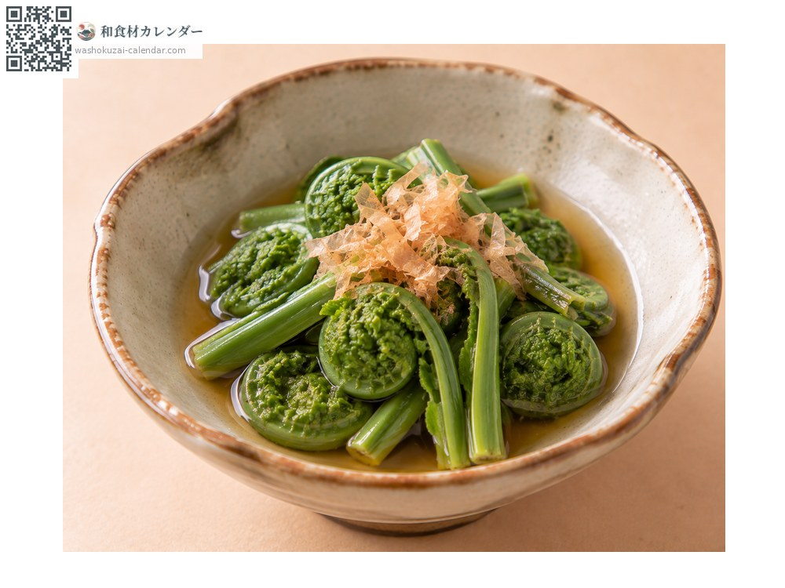
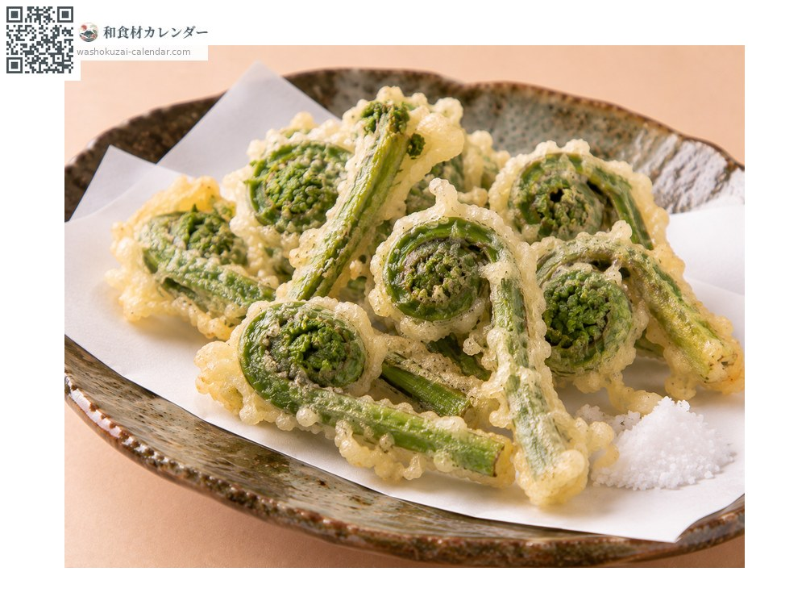
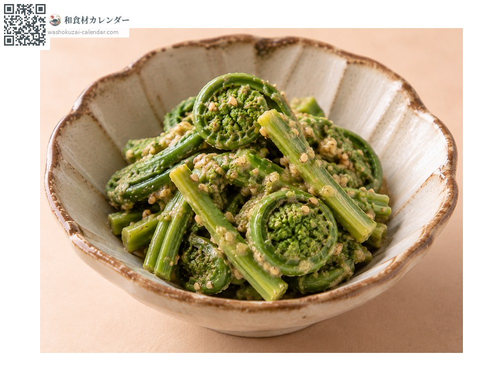
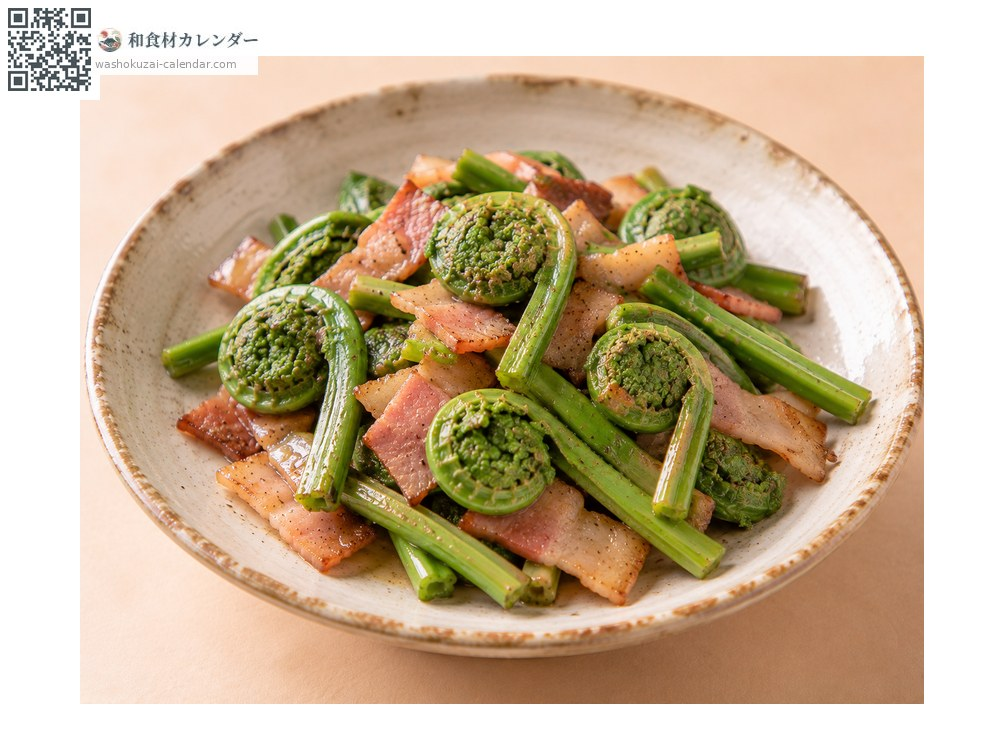

蔬菜
荚果蕨嫩芽
こごみ こごみ kogomi
别名kogomi
应季时期为4月、5月

应季时期
1月
2月
3月
4月
5月
6月
7月
8月
9月
10月
11月
12月
应季有供应
烹饪方法

烫青菜
快速焯水后浸在高汤里，不需要去涩。

天妇罗
整根油炸，卷曲的形状相当美丽。

芝麻拌
用芝麻凉拌，黏滑感能让芝麻附着得很好。

热炒
与培根一起炒，西式做法也很合。
挑选方法
穗尖卷得紧实、茎粗而短。绿色浓郁并带有细毛。
保存方法
焯水后冷藏，两到三天内用完。烫过后也能冷冻。
主要产地
小知识
正式名称为荚果蕨。新芽卷曲的模样像人弯腰的样子，因而得名。在山菜中少见地几乎没有涩味，只要焯水就能吃，相当好处理。黏滑感与爽脆的口感就是它的精髓。